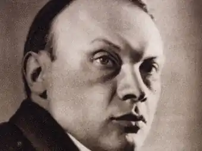
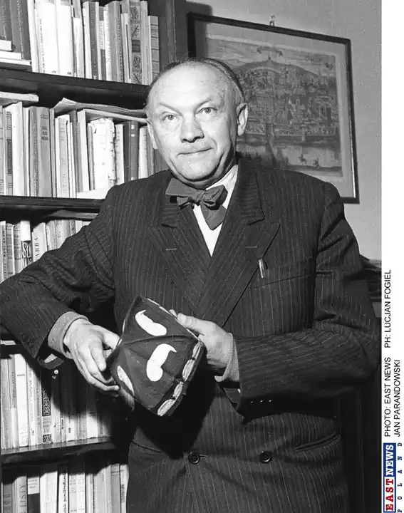
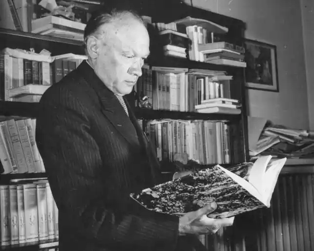

Народився 11 травня 1895 року у місті Львів. Відучився в місцевій гімназії після чого вступив до Львівського університету. Будучи студентом, брав участь у багатьох розкопках на території Європи. У 1923 успішно закінчив університет. В цьому ж році йому було присвоєно звання магістра класичної філології та археології. У 1930-1931 рр. був одним з двох редакторів науково-літературного журналу "Паментнік варшавський". В цьому ж році Парандовский обирається головою Пен-клубу польських письменників. У 1945-46 він викладає в Люблінському університеті. З 1948 року — член Варшавського наукового товариства.
творчість
У 1913 році вийшла його перша серйозна стаття про Ж. Ж. Руссо. Надалі Парандовский захопився античністю. Більшість його статей, оповідань, есе присвячена саме цій темі. Популярність у широкого читача він придбав завдяки своїй книзі "Міфологія". У 1933 році вийшла книга "Олімпійський диск". Серед довоєнної прози письменника виділяється автобіографічний роман "Небо у вогні". Після війни він видав ще ряд творів, в тому числі книгу про Петрарке (1956) і книгу оповідань про дитинство "Сонячний годинник" (1953). Також Парандовский перевів книги Юлія Цезаря "Про громадянську війну" (1951), Лонга "Дафніс і Хлоя" (1948), "Одіссею" Гомера (1953). Однак основним його працею вважається книга "Алхімія слова". Помер в 1978 році. Записи некролога: "Парандовский присвятив все своє творчість поширенню великих традицій європейського гуманізму".